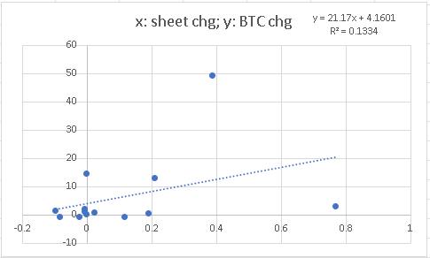
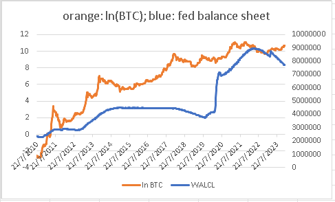

2年前，約2022年1月，我在Patreon寫了篇文章，探討收水及加息會否影響加密貨幣價格。當時拿來了收水放水數據，以及美國債息來與比特幣價格作分析。結果顯示，比特幣價格與美國貨幣政策以及利率高低並無關係。
2022年過去後，有網民瘋狂指罵我錯了，因為2022年美國開始收水，同時亦加息，同時比特幣價下跌，所以我那個「收水放水與比特幣無關」的陳述是錯誤的。
留意，Correlation doesn’t imply casuation，相關並不代表有因果關係。這點我在2017年開始做投資者教育就開始講，不斷講，瘋狂講，因為炒賣要賺錢，一定要知道所有正確的因果關係，不能有錯誤認知。
舉例，我曾經無數次預測到恒指走勢，而我看的都是衍生產品的數據，例如有大戶做好倉等等。坊間的財演卻解釋是因為什麼圖表上的價格出現杯柄突破，而且碰上二十四節氣，再加上水星逆行周期，因此恒指上升。
如果投資者以後真的看著杯柄突破、看節氣、看星象，相信他很快就會輸光。我不斷強調，對世界要有正確認知，就不會輸錢，就是這個原因。
那為什麼恒指上升時，會有杯柄突碰，會碰上廿四節氣，會碰上水星逆行呢？
以下舉幾個高Correlation的例子。
以下都是真實數據。
例子一，美國的雪糕銷量與鯊魚襲擊人的數量是極度相關的。
例子二，每年的碩士畢業生數量與票房銷量是極度相關的。
例子三，每年遇溺的人數與核能發電量是極度相關的。
例子四，每年中學畢業生的數量與披薩銷量是極度相關的。
為什麼會這樣？例子一，真正因子是季節。因為夏天，因此雪糕少量上升，去沙灘的人數也上升。於例子二三四，真正因子是全球人口。因為人口數量上升，因此基數上升影響到所有東西的數量也上升。
謹記，Correlation doesn’t imply casuation。
因此，我於2年前已經做好了數據分析給讀者，讀者竟然因為2022年的一年數據，就推定我的陳述是錯誤的，實是可悲，完全沒有批判思維。（看我的專欄須帶腦子）
好了，2024年的宏觀基調仍為收水，那比特幣會受影響嗎？
我們試試加入2022及2023年的數據去看看。
為了看收水放水效果，我拿來了過去13年美聯儲的資產負債表。若以weekly resolution去對比它與比特幣的相關性，scatter plot如下：
相關性為0.05，無關。
有人challenge也許收水放水的影響不是以week的維度呈現的。好，那就以monthly resolution去對比，scatter plot如下：
相關性為0.1，無關。
有人challenge也許收水放水的影響不是以month的維度呈現的。好，那就以yearly resolution去對比，scatter plot如下：

相關性為0.37，稍為提升，但仍然很低。
那為什麼會升高了？
還記得上述4個現實生活的例子嗎？比特幣長期上升，美國也長期放水，兩者放在一起，當然看起來是一起上升了。
如果看看以下yearly table對比：
有不少年份是反例子。2014年放水，BTC大跌53%；2017年沒放水，BTC大升1500%；2022年只是輕微收水，BTC大跌64%；2023年明顯收水，BTC大升164%。
也可以看看兩條曲線：

真正影響比特幣的是，每4年一次的獎勵減半機制。
細心看，2012減半，2012-2013大升，2014大跌；2016減半，2016-2017大升，2018大跌；2020減半，2020-2021大升，2022大跌。
這是帶有批判思維，才能看明白的文章。
這才是大家該有的正確認知。